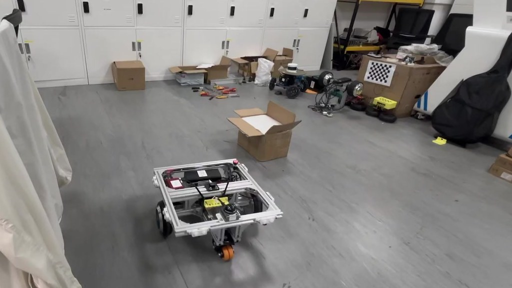

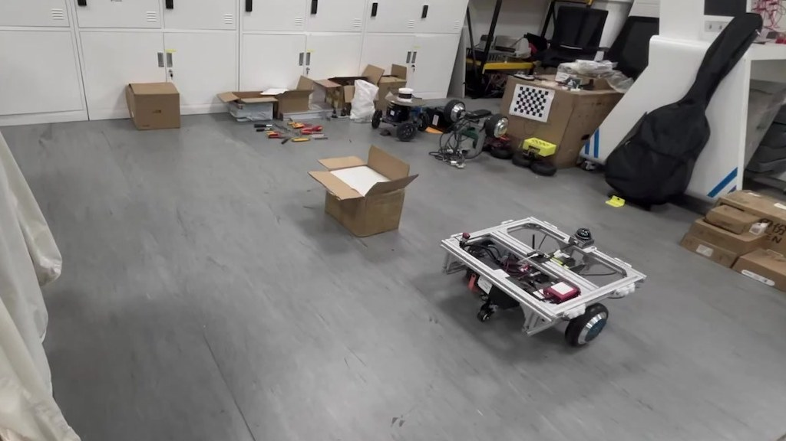
VLN Robot Project Page
A humanities-informed Vision-Language Navigation project suite for real AMR platforms, LiDAR mapping, ROS2 navigation, and embodied instruction following.
Hardware Prototypes
这些平台更像是在桌面、地面和测试场里一版版收拢出来的工程样本：轮子、型材、外壳、屏幕、线束和传感器安装位置，都留下了能继续复盘的实验痕迹。


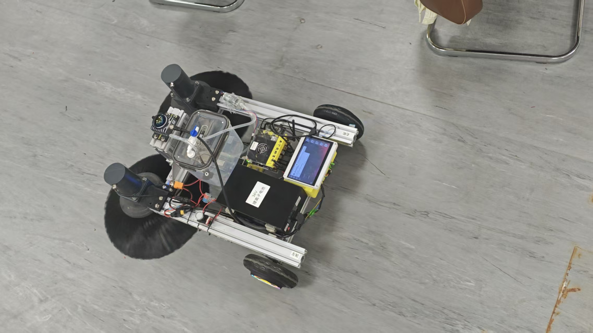

· 手持建图工具
手持雷达建图工具：把传感器、手柄、固定件和走线做成可移动采集形态，用来快速采集室内、走廊和机器人测试场的环境数据，为 AMR 导航先准备地图和传感器样本。


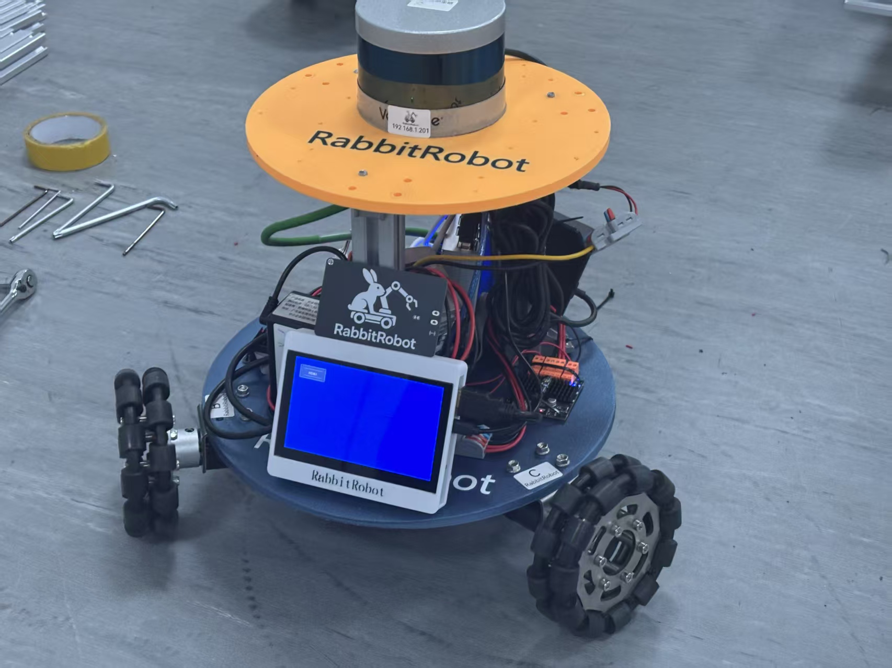
· 全向底盘验证
全向轮小车系列：从小尺寸验证车到铝型材 AMR 底盘，一边调整轮系、安装高度、电源布线和传感器位置，一边验证底盘控制、远程控制和后续 ROS2/Nav2 导航实验。
Latest Real Robot · AMR2
AMR2 不是仿真 demo，而是 ljh_amr2_hubwheel_drive 真车工作空间：从底盘、线束、传感器安装到 launch 链路都服务于同一个闭环。VLN/VLM 负责理解语言任务并生成 waypoint，AMR2 负责把 waypoint 转成地图定位、局部路径、速度指令、安全过滤和可回放数据。
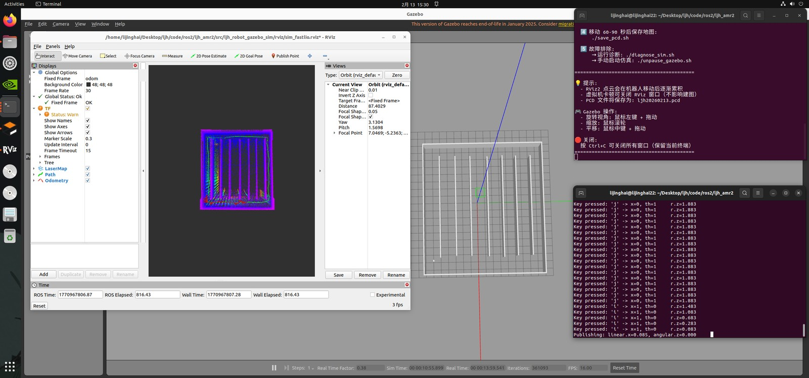
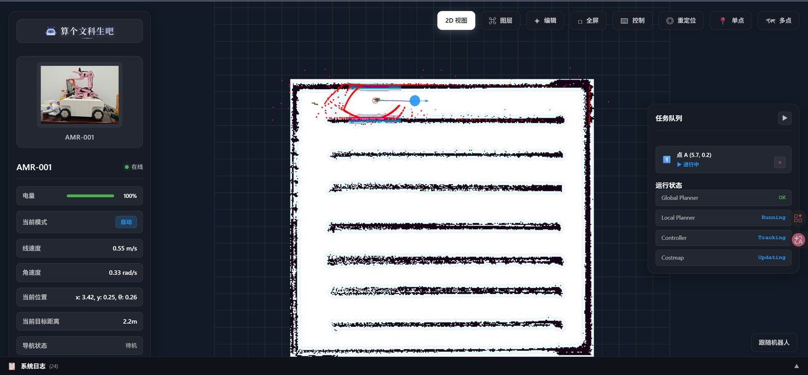


Coverage Planner · 2026.07.26
这套扫地机覆盖算法不是简单画一组蛇形线：它会把 RViz 里拖出来的矩形或多边形区域，和真实 PCD 转出的 2D 地图、AMR2 的 0.486 m × 0.450 m footprint、障碍膨胀、安全内收和连通分块放在一起计算，最后输出 RViz/Nav2 可复用的 /coverage_path。
Coverage Rect 拖矩形，或用 Coverage Poly 点多边形；第一圈是清扫外轮廓，后续圈可以作为障碍孔洞。
/map，只保留 known-free cells，unknown、off-map 和 occupied 区域都会先从覆盖区域里扣掉。
/coverage_path 和带 yaw 的覆盖路径消息。
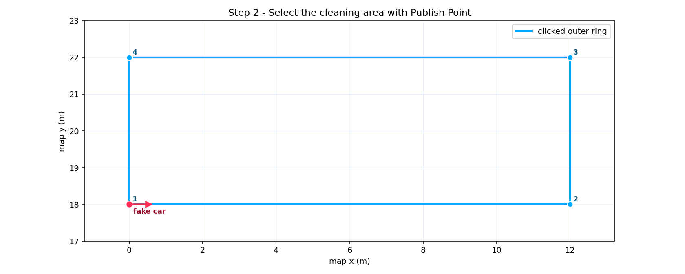
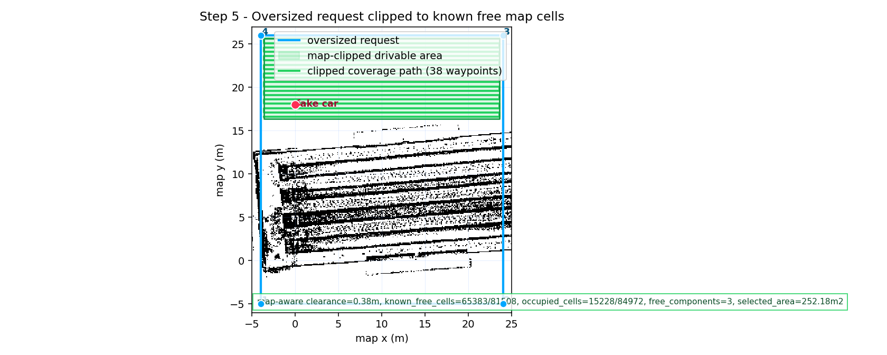
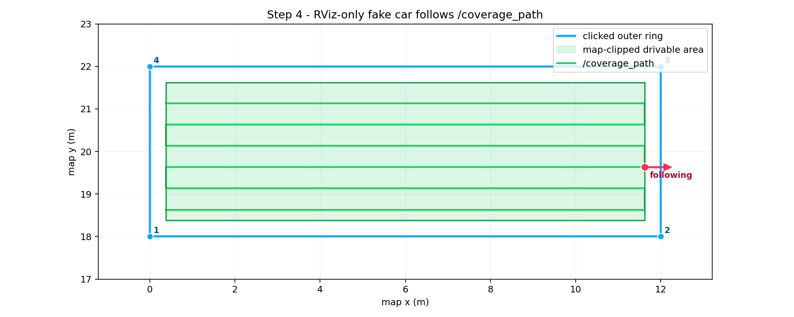
算法本身只负责区域理解、覆盖路径生成和 RViz/消息发布；真车执行仍然要进入 Nav2、速度平滑、collision monitor 与 DS20270C CAN 底盘链路，避免绕过安全保护。
Project Abstract
RabbitRobot 不是单个演示项目，而是一组围绕真实移动机器人逐步生长的工程和研究资产。它保留了从零件级搭建、结构打样、现场测试到软件链路整理的连续痕迹。现在它的主线正在转向 Vision-Language Navigation：让机器人把“去门口看一下”“绕开杂物到桌边”这类语言任务，落到地图、视觉观测、局部目标和 AMR2 真车动作上。
这个主页采用学术项目页的表达方式：先给出真实硬件、系统资源与图示，再展开 VLN 方法、项目矩阵、研究指标和迭代路线。它更像一篇持续更新的 project page，而不是只展示视觉气氛的作品集。
Approach

以 AMR 底盘为核心，把主控、激光雷达、深度相机、驱动、电源、支架、线束和 ROS2 软件链路变成可持续迭代的平台。
把自然语言指令、相机/雷达观测、语义目标、地图区域和导航 waypoint 对齐，让“文字任务”落到真实机器人状态空间。
先跑稳 Nav2 baseline，再采集可复现指令与轨迹数据，最后比较 VLN 策略在成功率、路径效率和安全性上的变化。
Project Suite
| Project | Time | Role | Current Focus | Stack / Keywords |
|---|---|---|---|---|
| RabbitRobot_AMR移动底盘与核心项目 | 底盘主线 | 核心实验平台 | 底盘控制、建图、导航、局部规划和真实数据采集。 | |
| RabbitRobot_AMR2轮毂伺服真车平台 | 当前真车 | VLN 真车执行底座 | 用 DS20270C CAN 轮毂伺服差速底盘、MID360、Fast-LIO、ICP、Nav2 MPPI、速度平滑和避障保护，承接 VLN waypoint 的真实执行与 rosbag 数据回收。 | |
| RabbitRobot_CoveragePath扫地机覆盖路径算法 | 覆盖规划 | 清扫/覆盖算法能力 | 在真实 PCD 2D 地图上，根据 RViz 框选区域、polygon holes、占据栅格、AMR2 footprint 和安全边距生成 map-aware 覆盖路径，并输出可接入后续 Nav2 执行器的路径。 | |
| RabbitRobot_VLN视觉语言导航主线 | 当前研究 | 当前研究主线 | 把自然语言指令、视觉/地图 grounding、waypoint 规划和真实 AMR 执行评估串成闭环。 | |
| RabbitRobot_Sweeper V1.0扫地机第一代原型 | 原型归档 | 清扫场景原型 | 用实物底盘验证清扫机构、供电、驱动、布线和 ROS2 接入前的硬件布局。 | |
| RabbitRobot_HandLiDAR手持雷达建图仪 | 建图工具 | 地图生产工具 | 为 AMR 和场景实验提供更高质量地图与传感器数据。 | |
| RabbitRobot_ROS2_WebAMR Web 控制台 | 控制台整合 | 机器人操作界面 | 把 ROS/ROS2 地图、图层、导航、任务和状态监控搬到浏览器里。 | |
| RabbitRobot_D435_L1_RTABMap多传感器建图导航 | 建图链路 | 三维建图与定位 | 融合 Unitree L1、Intel RealSense D435 和 MPU6050，验证 RTAB-Map 与 FAST-LIO2 链路。 | |
| RabbitRobot_SCFH智慧鸡场净环机器人 | 场景验证 | 真实压力场景 | 围绕狭长通道、低附着地面和服务机器人落地做需求验证。 | |
| RabbitRobot_Arm具身智能机械臂 | 操作方向 | 操作能力扩展 | 为移动操作机器人储备 LeRobot、ACT、MoveIt2 等能力。 | |
| RabbitRobot_ElderBuddy老人陪伴机器人 | 服务概念 | 服务概念验证 | 把导航、交互、提醒和陪伴需求放进室内服务机器人设想。 | |
| RabbitRobot_Web公开网站 | 公开主页 | 公开归档入口 | 展示项目材料、技术笔记、图像资料和后续论文/报告入口。 |
Repository Snapshots
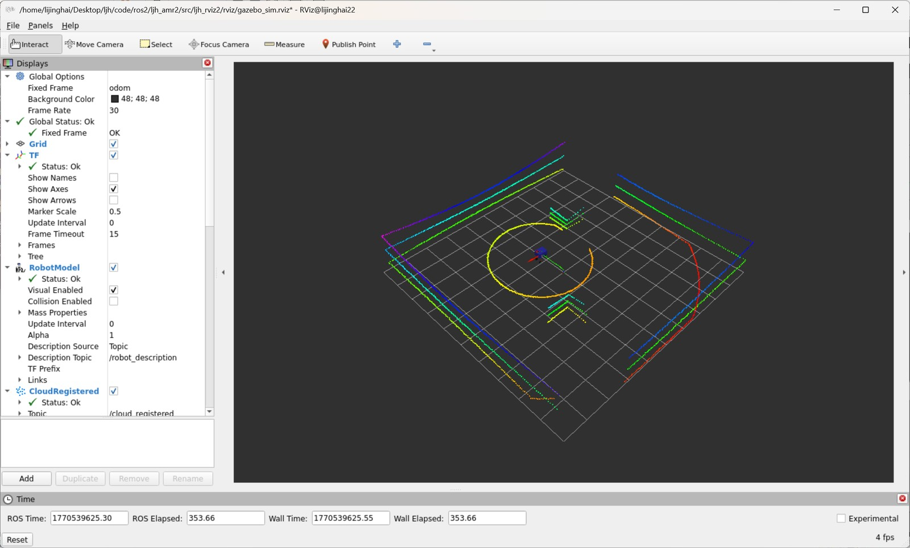
这是 AMR2 轮毂伺服差速小车的真车导航工作空间，把 MID360 建图定位、Nav2 MPPI 执行、速度平滑、近距离避障和 DS20270C CAN 底盘驱动串成一条可复现实车链路。
/scan 给定位和局部导航使用。/cmd_vel_nav 经 velocity_smoother 与 collision_monitor 后进入 /cmd_vel_smooth，避免绕过平滑和安全保护。
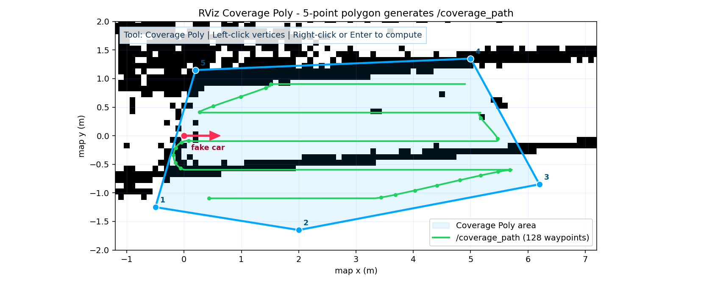
这是 AMR2 工作空间里新整理出的扫地机覆盖路径算法：从 RViz 鼠标框选区域出发，结合真实 PCD 转出的 OccupancyGrid、车体 footprint、安全边距和障碍孔洞，生成能在 RViz 中验证、后续可接 Nav2 执行器的覆盖路径。
Coverage Rect 拖矩形、Coverage Poly 点多边形，也支持直接调用 /coverage/compute_path。

这是 RabbitRobot 的浏览器端操作台：通过 rosbridge WebSocket 接入 ROS/ROS2，将地图可视化、图层配置、导航控制、重定位、手动控制、设备状态和系统日志集中在一个 Web UI 中。


这是 RabbitRobot 的多传感器建图导航链路：用 Unitree L1 提供几何结构，Intel RealSense D435 提供彩色与深度数据，MPU6050 提供姿态补偿，再通过 FAST-LIO2 与 RTAB-Map 组织成可运行的 SLAM 实验。
Current Focus · VLN
当前最适合作为论文型主线推进的问题，是把 RabbitRobot AMR2、手持雷达地图、Web 控制台和真实室内场景整理成一个小而真实的 VLN 实验平台。机器人不只接收坐标点，而是接收自然语言任务，再把语言中的目标、约束和路线偏好 grounding 到视觉/地图观测上。
短期路线是先用 AMR2 的 Nav2 MPPI、速度平滑、collision monitor 和 DS20270C CAN 底盘跑稳执行层，再收集语言指令、地图区域、视觉帧、waypoint、rosbag 轨迹和失败案例，逐步训练或评估能够提出中间目标并解释导航选择的 VLN/VLM 策略。
把“去门口”“绕过杂物到桌边”等自然语言任务整理成可复现实验指令。
将视觉、雷达地图、语义区域和机器人当前位置对齐到同一个场景表示。
由 VLN/VLM 策略提出中间目标、路线偏好和失败恢复候选动作。
由 AMR2 的 Nav2 MPPI、速度平滑、collision monitor 和 CAN 底盘完成真实执行，并回收 rosbag 轨迹。
Roadmap
树莓派 5、思岚 A1、宇树 L1、DABAI DCW2、Cartographer、Nav2 和视觉感知实验。
Jetson Orin Nano Super、C50C、MID360、VLP-16、FAST-LIO2、Point-LIO2 和 Autoware 探索。
Hoverboard FOC、STM32、ST-Link、IMU 接入、cmd_vel/odom 话题和底盘控制验证。
以 AMR2 轮毂伺服真车为主平台，组织语言指令、地图区域、Web 控制台标注、Nav2 MPPI 执行和 rosbag 回放评估。
Contact / Follow
欢迎通过下面的二维码关注 RabbitRobot 项目更新、B 站视频和日常工程记录；点击图片可以打开高清大图，手机扫码更方便。
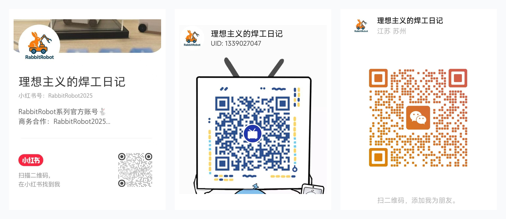
Citation
@misc{lijinghai2026rabbitrobot,
title = {RabbitRobot: A Humanities-Informed Robotics Project Suite},
author = {算个文科生吧},
year = {2026},
url = {https://lijinghai.github.io/},
note = {Vision-Language Navigation, AMR, SLAM, Nav2, and embodied AI}
}